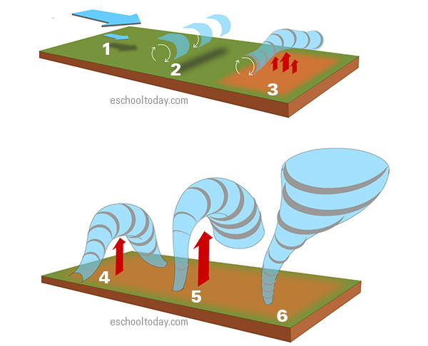

How Tornadoes Form
For a tornado to be created you need:
A tornado is formed when wind near the ground moves slowly, but wind higher up moves very fast. When these two different speeds of wind interact, the air in between them starts to roll in a horizontal circle, just like a tube.
During a storm, a lot of warm air rises quickly from the ground toward the sky. This rising air hits the horizontal rolling tube of air and pushes one side of it upward. This changes the direction of the spin so that it is now rotating vertically instead of sideways.
The storm continues to pull this vertical spinning air upward, stretching it out. As the spinning column becomes taller and thinner, the air inside starts to move much faster. Eventually, this fast-spinning air stretches all the way down from the bottom of the cloud until it touches the ground.

If you still don't really understand how tornadoes form, watch this Youtube video for better clarity --> How Tornadoes Form